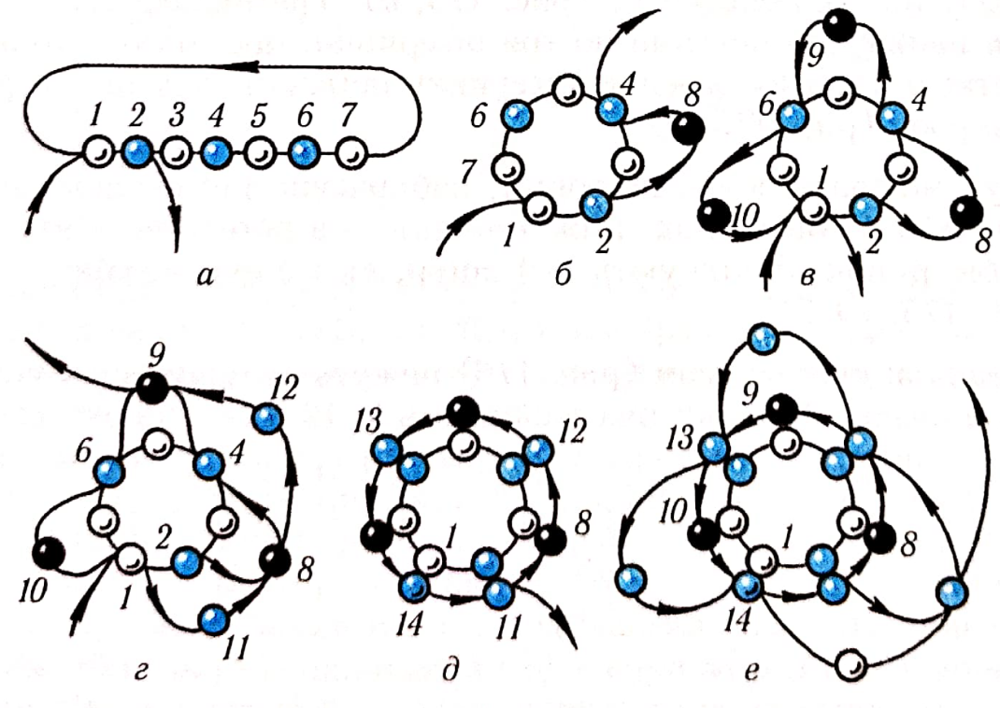
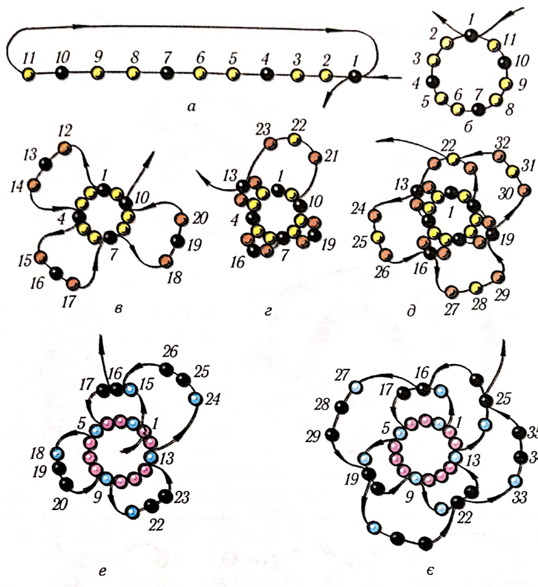
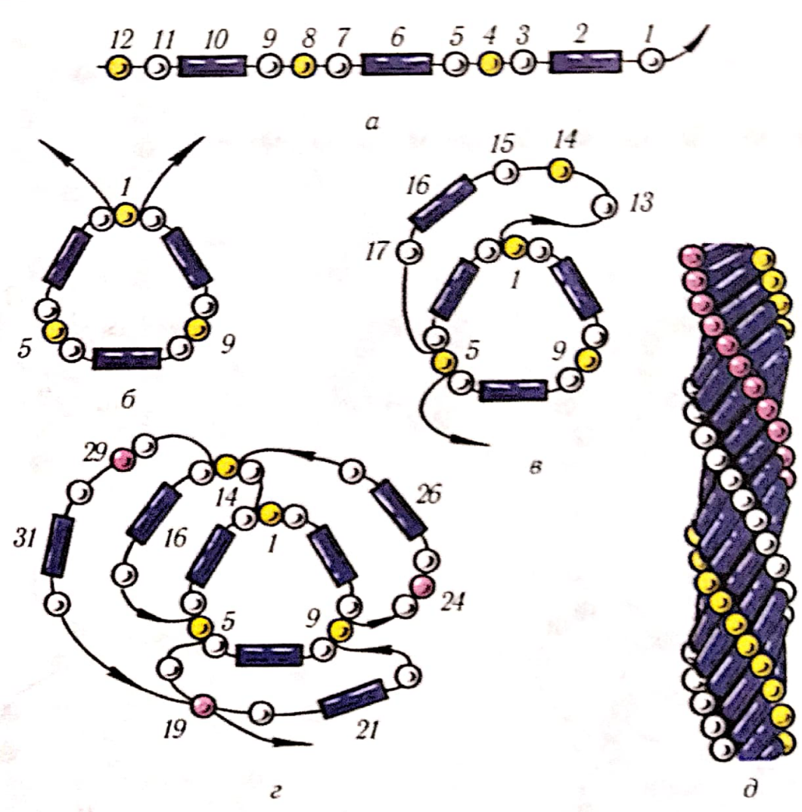
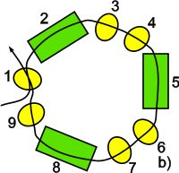
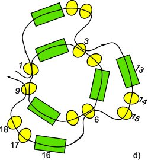
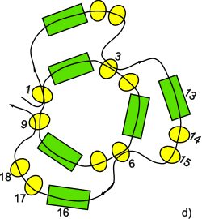

ЛАБОРАТОРНО-ПРАКТИЧНА РОБОТА
Тема: «Шнури об’ємні»
Мета: засвоєння техніки нанизування круглих та квадратних шнурів, виховувати естетичний смак, повагу та любов до традицій українського народу.
Матеріали та інструменти: бісер різного розміру та кольору, капронові нитки, голки для бісеру.
Порядок виконання роботи:
- Ознайомитись з теоретичними відомостями роботи.
- Виконати завдання практичної роботи.
Теоретичні відомості:
Прикраси у вигляді круглих і квадратних шнурів, суцільних та ажурних, доповнювали жіночий народний костюм у багатьох областях України. Шнури мали безліч місцевих назв – шнур, джгут, хробак, шульчик, гердан кручений, лагцок.
Виготовляли шнури, залежно від об’єму, на чотирьох, шести, восьми і більше нитках.
Джгут з бісеру-вид об’ємних виробів з бісеру, представляє собою порожнистий шнур щільного або ажурного плетіння.
Шнур з бісеру - вид елемента (виробу) з бісеру, який на відміну від джгута не має порожнини, а являє собою щільний об’ємний ланцюжок.
Класифікація джгутів і шнурів з бісеру: джгут «мозаїчний» (щільне плетіння); джгут ажурний; джгут спіральний; м’який спіральний джгут; джгут «квадратний».
Ускладнені джгути: (змінного плавного і змінного ступеневого плетіння). «Махровий» джгут (джгут «мох»); джгут в «квадратик»; джгут «черепашки»; джгути в техніці ндебеле (чотиригранний простий, чотиригранний кручений); джгут з ажурною опліткою; джгут з обробкою ланцюжком з бісерних квіточок; джгут в’язаний гачком; американський шнур; квадратні шнури; тригранні шнури; тригранний шнур «ромби».
Розглянемо виготовлення шнура на одній нитці. Робота не дуже складна, але потребує уваги під час складання узорів із кольорових бісеринок у вигляді косих смуг, хрестиків, крапок.
Практична робота
1. Шнур круглий мозаїка(мал. 25) нанизують по колу, у стовпчик, знизу вгору з крупного або середнього бісеру. Для першого ряду туго сплетеного шнура набирають на нитку сім бісеринок 1-7 і протягують голку крізь перші дві бісеринки 1 і 2 ряду, щоб вийшло кільце (мал. 25, а). Для більшої міцності нитку можна протягти крізь усі бісеринки ряду. Другий ряд нижуть, набираючи на нитку по одній кольоровій бісеринці 8, 9, 10 і протягують голку з ниткою крізь бісеринки-зв’язки 4, 6, 1 першого ряду (мал. 25, б, в).Щоразу притягують нитку. Третій ряд набирають з однобарвних бісеринок 11-14, протягуючи робочу нитку убісеринки-зв’язки 8, 9, 10попереднього ряду, і притягують нитку, щоб бісеринки не провисали (мал. 25, г, д).Так само нижуть усі наступні ряди. Візерунки з різнобарвних бісеринок можна складати під час роботи. Закінчують шнур, з’єднуючи перший і останній ряди, або пришивають застібку, чи сплітають шнурочки-зв’язки з ниток.

Мал. 25. Шнур круглий мозаїка.
2. Шнур спіраль(мал. 26) – ажурний виріб із петель бісеру або бісеру зі стеклярусом. Нанизують його, як і мозаїку, знизу вгору по колу способом устовпчик. Для першого ряду набирають одинадцять бісеринок 1-11 і з’єднують їх у кільце, протягуючи робочу нитку в бісеринку першого ряду (мал. 26, а, б).Набирають другий ряд із трьох петель по три бісеринки 12-14, 15-17, 18-20,протягують нитку крізь бісеринки-зв’язки 4, 7, 10першого ряду, щоразу притягуючи нитку (мал. 26, в).

Мал. 26. Шнур спіраль.
Третій і всі наступні ряди нанизують петлями по три бісеринки, прoтягуючи голку з ниткою в кожну середню бісеринку петель попереднього ряду виробу (мал. 26, д).
Шнур можна зробити широким, набираючи для першого ряду 14 або 15 бісеринок, і ажурнішим – з петель по п’ять-сім бісеринок. Закінчують цей шнур, як і шнур мозаїку (мал. 26, є).
3. Спіраль зі стеклярусом 1 (мал. 27) нижуть за принципом спіралі з бісеру. Перший ряд набирають із 12 намистинок: однієї бісеринки 1, стеклярусу 2, трьох бісеринок 3-5, стеклярусу 6, ще трьох бісеринок 7-9, стеклярусу 10та двох бісеринок 11, 12. З’єднують ряд укільце, протягуючи нитку в бісеринку 1 (мал. 27, а, б).Набирають другий і всі наступні ряди петельок, які складаються з п’яти намистинок: трьох бісеринок 13-15, стеклярусу 16 і бісеринки 17 (мал. 27, в). Нитку протягують крізь кожну другу 5, 9 бісеринки-зв’язки першого ряду та другі 14, 19, 24 бісеринки початку петель другого ряду (мал. 27, г). Потім набирають усі наступні ряди майбутнього виробу в такій самій послідовності, постійно притягуючи нитку (мал. 27, д).
Працюючи зі стеклярусом, не слід забувати, що він має гострі краї, які ріжуть нитку. Тому робоча нитка має бути міцною й добре навощеною. Щоб зберегти робочу нитку, можна набирати на краях стеклярусу додаткові бісеринки.

Мал. 27. Спіраль зі стеклярусом.
Спіраль зі стеклярусом 2. На нитку набираємо 1 бісеринку, 1 трубочку стеклярусу, 2 бісерини, 1 трубочку, 2 бісерини, 1 трубочку, 1 бісерину. Всього – 9 штук (мал. 28, а). Тепер з’єднуємо нанизані бісеринки в кільце, пройшовши голкою через першу набрану бісерину. Затягуємо. Вийшов перший ряд (мал. 28, б). Для другого ряду нанизуємо 1 трубочку і 2 бісерини і протягуємо голку через бісерину номер 3 (мал. 28, с). Потім знову набираємо 1 трубочку і 2 бісерини, а голку пропускаємо через бісерину номер 6. Цей крок повторюємо ще раз, але голку проводимо через бісеринку номер 9. Нитку добре підтягуємо. Вийшов другий ряд (мал. 28, д). Решта рядів плетуться аналогічно другому. Всі ряди спірального джгута плетуться з петель, які складаються з 1 трубочки стеклярусу і 2 бісеринок. Кожен раз треба проводити голку через першу бісерину після стеклярусу.

 

Мал. 28
Контрольні питання:
- Як класифікують джгути і шнури з бісеру?
- Яку кількість бісерин набирають для першого ряду?
- Який бісер використовують для нанизування об’ємних шнурів?